专题5.1 认识方程
专题5.1 认识方程


教学目标 | 1. 理解方程概念，能从实际问题中准确分析数量关系并列出方程，体会方程是刻画现实世界数量关系的有效数学模型。 2. 掌握一元一次方程的概念与解法，能熟练运用等式基本性质求解，提升运算能力与逻辑思维。 3. 深入理解等式基本性质，能依据性质对等式进行正确变形，解决相关方程问题，培养抽象概括能力 。 |
教学重难点 | 1.重点 （1）明晰方程、一元一次方程的概念，学会从实际问题里提炼数量关系列出方程。 （2）掌握等式基本性质，能利用性质求解一元一次方程 。 2.难点 （1） 从复杂实际问题中精准找出数量关系并列出方程，实现从实际问题到数学模型的转化。 （2）深入理解等式基本性质的本质，并能灵活运用其进行等式变形与方程求解 。 |

知识点01 方程的有关概念
定义：含有未知数的等式叫做方程.
【说明】判断一个式子是不是方程，只需看两点：一是等式；二是含有未知数．
【即学即练1】
1．已知下列式子： ．其中方程的个数为（ ）
．其中方程的个数为（ ）
A．3 B．4 C．5 D．6
【答案】C
【知识点】判断各式是否是方程
【分析】本题考查的是方程的定义，根据方程的定义对各选项进行逐一分析即可．
【详解】解： 不是等式，所以它不是方程；
不是等式，所以它不是方程；
 是等式，但其中不含未知数，所以它不是方程；
是等式，但其中不含未知数，所以它不是方程；
 不是等式，所以它不是方程；
不是等式，所以它不是方程；
 都具备方程的两个条件，所以都是方程．
都具备方程的两个条件，所以都是方程．
故选：C．
知识点02 一元一次方程的概念
定义：只含有一个未知数（元），并且未知数的次数都是1，这样的方程叫做一元一次方程.
【说明】“元”是指未知数，“次”是指未知数的次数，一元一次方程满足条件：
①首先是一个方程；②其次是必须只含有一个未知数；③未知数的指数是1；④分母中不含有未知数．
【即学即练2】
1．下列式子：① ；②
；② ；③
；③ ；④
；④ ；⑤
；⑤ ；⑥
；⑥ 中，一元一次方程共有（ ）
中，一元一次方程共有（ ）
A．1个 B．2个 C．3个 D．4个
【答案】C
【知识点】一元一次方程的定义
【分析】本题考查的是一元一次方程的定义，熟知只含有一个未知数（元），且未知数的次数是1，这样的方程叫一元一次方程是解题的关键．
根据一元一次方程的定义进行分析即可．
【详解】解：①是代数式，不是方程，不合题意，
②是不等式，不合题意，
③，去括号为 ，未知数的次数是2，不合题意，
，未知数的次数是2，不合题意，
④是一元一次方程，符合题意，
⑤是一元一次方程，符合题意；
⑥是一元一次方程，符合题意；
故选：C
2．已知关于 的方程
的方程 是一元一次方程，则实数
是一元一次方程，则实数 的取值是（ ）
的取值是（ ）
A．1 B． C．1或 D．0
C．1或 D．0
【答案】B
【知识点】一元一次方程的定义
【分析】本题考查了一元一次方程的定义，根据含有一个未知数并且未知数的次数为1的整式方程，据此即可作答．
熟练掌握一元一次方程的定义是解题的关键．
【详解】解：∵关于的方程是一元一次方程，
 ，
，
由①得
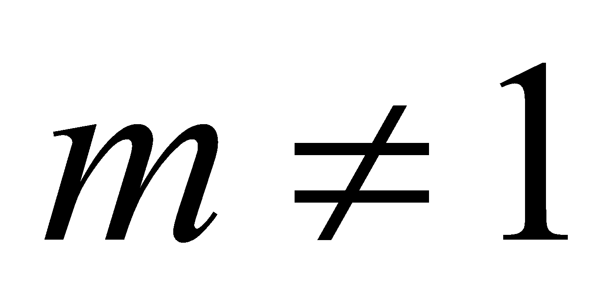
，由②得 ，
，
综上， ．
．
故选：B．
知识点03 方程的解、解方程
1.方程的解：使方程左右两边的值相等的未知数的值，叫做方程的解.
2.解方程：求方程的解的过程.
【即学即练3】
1．下列方程中，解为 的方程是（ ）
的方程是（ ）
A． B．
B． C．
C．
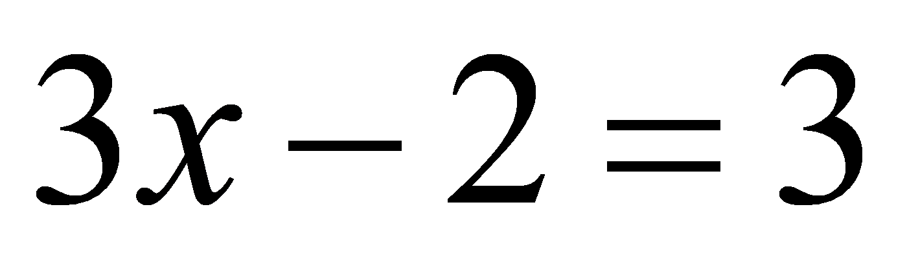
D．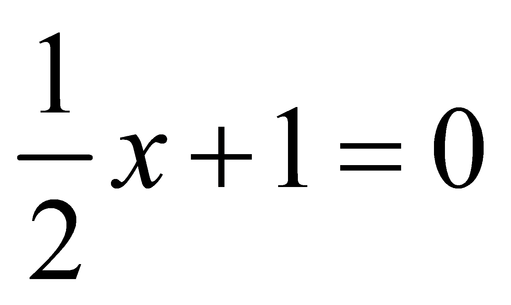
【答案】A
【知识点】方程的解
【分析】本题考查了一元一次方程的解的定义，使方程左右两边相等的未知数的值即为方程的解，把代入各个选项中，比较方程左右两边的值，即可作答．
【详解】解：A、把代入，则
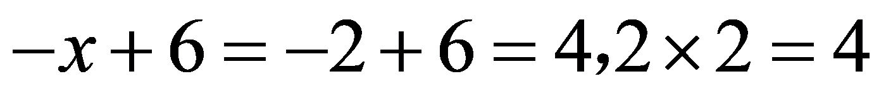
，左右两边相等，故该选项是正确的；B、把代入，则 ，左右两边不相等，故该选项是错误的；
，左右两边不相等，故该选项是错误的；
C、把代入，则 ，左右两边不相等，故该选项是错误的；
，左右两边不相等，故该选项是错误的；
D、把代入，则
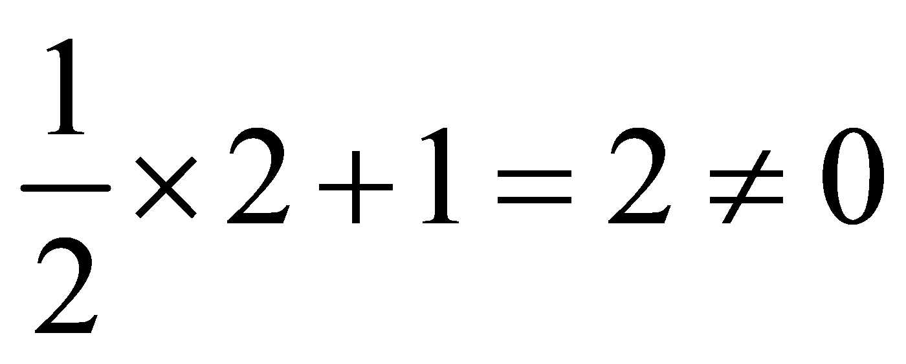
，左右两边不相等，故该选项是错误的；故选：A
知识点04 等式的性质
性质1：等式两边加同一个数（或式子）结果仍得等式；
性质2：等式两边乘同一个数或除以一个不为零的数，结果仍得等式．
【即学即练1】
1．下面利用等式性质对等式进行变形，错误的是（ ）
A．若 ，则
，则 B．
B． ，则
，则
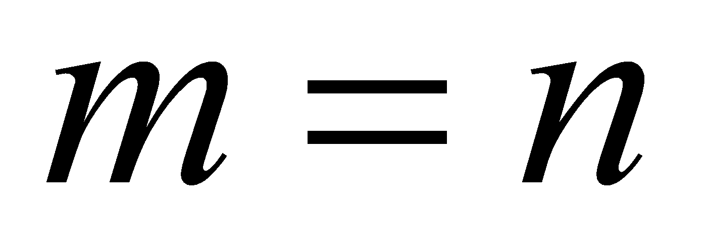
C．若
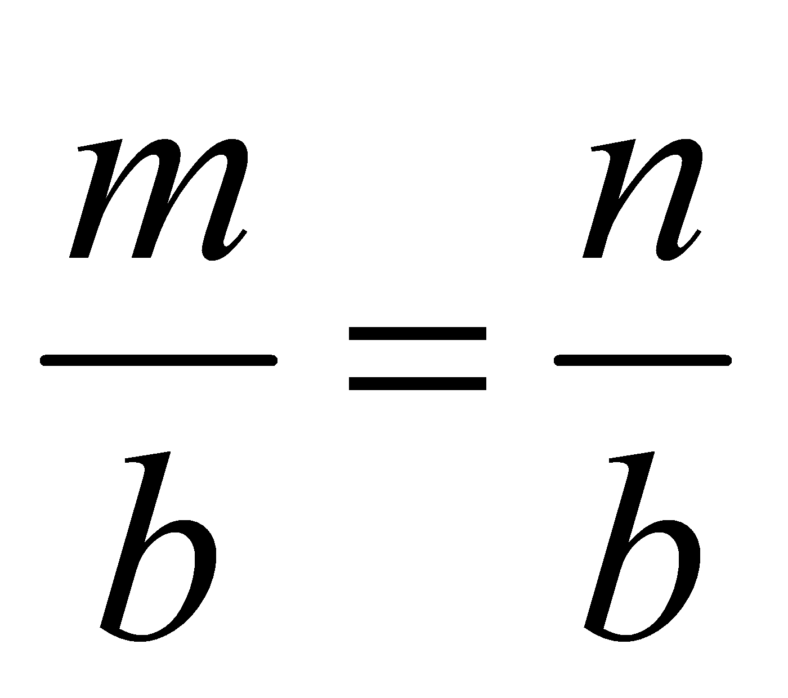
，则 D．若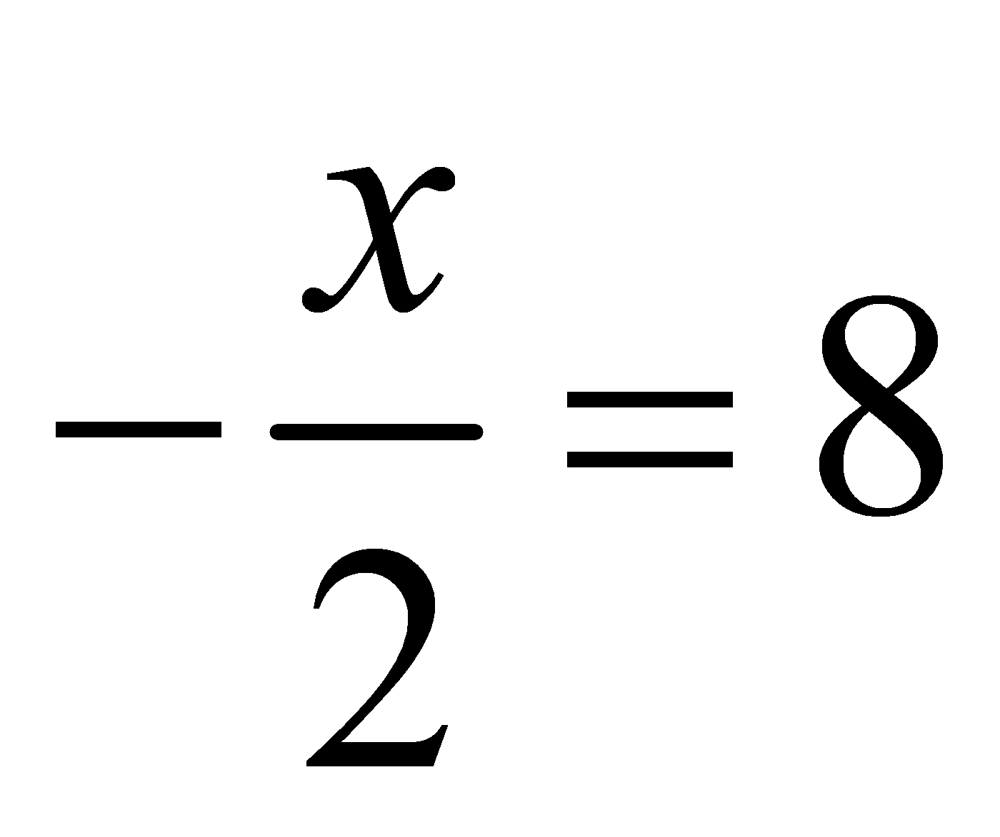
，则
【答案】B
【知识点】等式的性质
【分析】本题考查了等式的性质，能熟记等式的性质是解此题的关键，注意：①等式的两边都加（或减）同一个数或式子，等式仍成立；②等式的两边都乘以同一个数，等式仍成立，等式的两边都除以同一个不等于0的数，等式仍成立．根据等式的性质逐个判断即可．
【详解】解：A、若，则，正确，不符合题意；
B、，则，前提是 ，选项错误，符合题意；
，选项错误，符合题意；
C、若，则，正确，不符合题意；
D、若，则，正确，不符合题意；
故选：B．
2．运用等式性质进行的变形，下列正确的是（ ）
A．如果
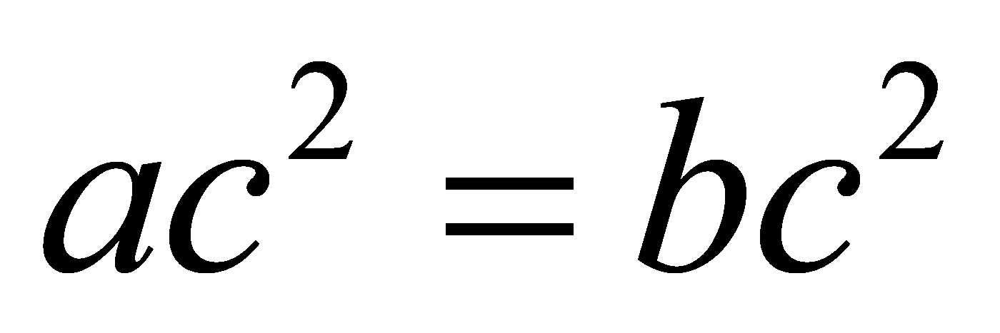
，那么 B．如果
B．如果 ，那么
，那么C．如果，那么 D．如果
D．如果 ，那么
，那么
【答案】D
【知识点】等式的性质
【分析】根据等式的性质，等式的两边同时加上（或减去）同一个数（或字母），等式仍成立；等式的两边同时乘以（或除以）同一个不为0数（或字母），等式仍成立．本题主要考查了等式的基本性质，等式的两边同时加上（或减去）同一个数（或字母），等式仍成立；等式的两边同时乘以（或除以）同一个不为0数（或字母），等式仍成立．
【详解】解：A．若 ，则结论正确，故A错误，不符合题意；
，则结论正确，故A错误，不符合题意；
B．根据等式的基本性质：等式两边同减一个相等的式或数，等式仍然成立，故B错误，不符合题意；
C．若，则结论正确，故C错误，不符合题意；
D．如果，那么 ，即，故D正确，符合题意；
，即，故D正确，符合题意；
故选：D．

题型01 判断各式是否是方程
【典例1】下列式子中，方程的个数是（ ）
①
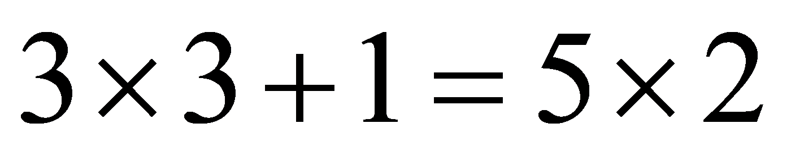
；② ；③
；③ ；④
；④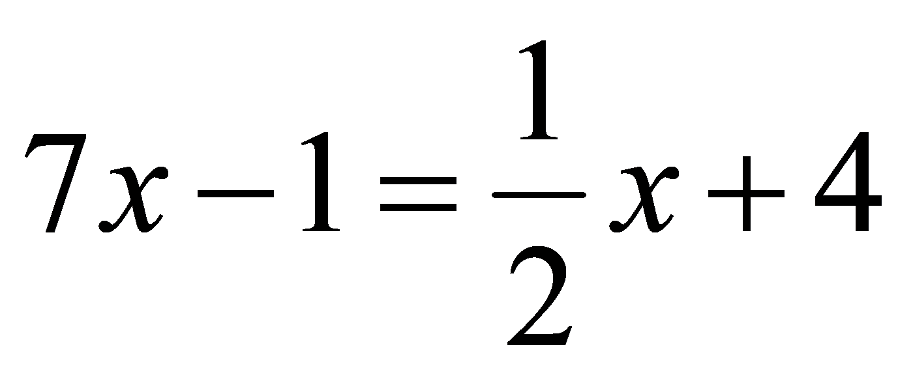
；⑤ ；
；A．2 B．3 C．4 D．5
【答案】A
【知识点】判断各式是否是方程
【分析】本题考查方程的定义，掌握含有未知数的等式叫做方程是解题的关键．
根据方程的定义求解即可．
【详解】解：①中不含有未知数，不是方程；
②不是等式，不是方程；
③、④符合方程的定义；
⑤是代数式，不是等式，不是方程；
综上，方程有2个．
故本题选：A．
【变式1】在
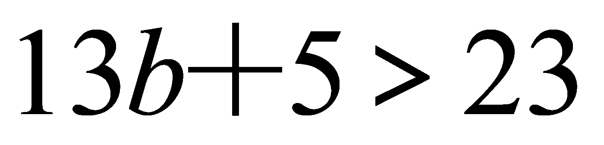
； ；
； ；
； ；
；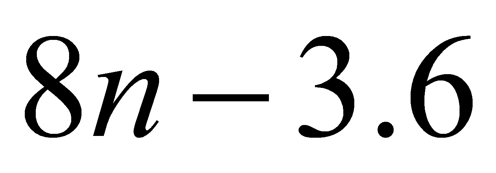
中，方程有（ ）个．A．2 B．3 C．4
【答案】A
【知识点】判断各式是否是方程
【分析】本题考查了方程的定义，熟知方程的定义是解题的关键．
含有未知数的等式叫做方程，由此判断即可．
【详解】解：方程有：，，共2个，
故选：A．
【变式2】下列各式 ，
，
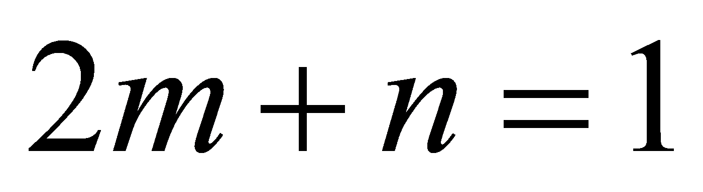
， （a，b为已知数），
（a，b为已知数）， ，
，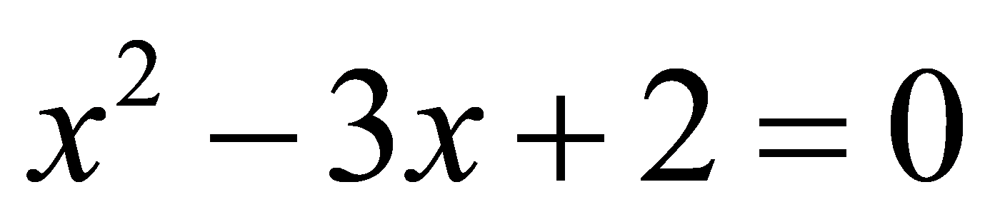
中，方程有（ ）A．1个 B．2个 C．3个 D．4个
【答案】C
【知识点】判断各式是否是方程
【分析】本题考查了方程的定义，含有未知数的等式叫做方程．根据方程的定义可以解答．
【详解】解：，，，这3个式子即是等式又含有未知数，都是方程．
不是等式，因而不是方程．
（a，b为已知数）不含未知数，所以不是方程．
故有3个式子是方程．
故选：C．
【变式3】下列各式：①  ；②
；②  ；③
；③
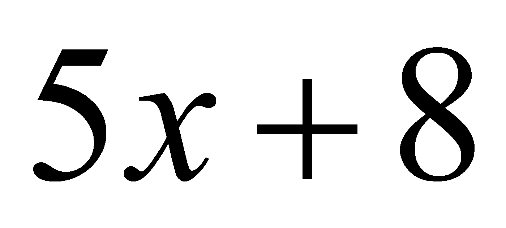
；④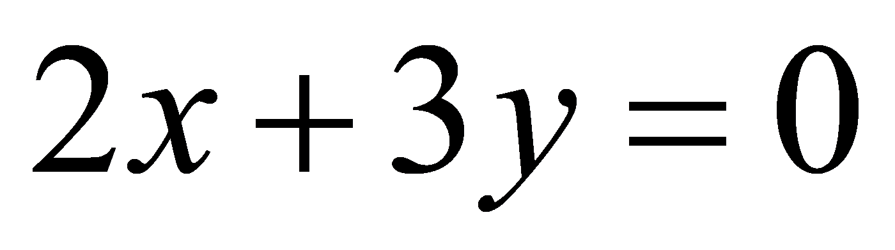
；⑤ ；⑥
；⑥ 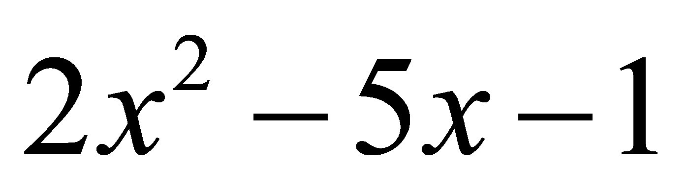
；⑦ ；⑧
；⑧  ．其中是方程的有（ ）
．其中是方程的有（ ）A．①②④⑤ B．①②⑤⑦⑧ C．①④⑦⑧ D．8 个都是
【答案】C
【知识点】判断各式是否是方程
【分析】本题考查方程的定义，根据含有未知数的等式，叫做方程，进行判断即可。
【详解】解：①符合方程的定义，故本小题正确；
②不含有未知数，不是方程，故本小题错误；
③不是等式，故本小题错误；
④符合方程的定义，故本小题正确；
⑤不是等式，故本小题错误；
⑥不是等式，故本小题错误．
⑦符合方程的定义，故本小题正确；
⑧ 符合方程的定义，故本小题正确．
故选C．
题型02 列方程
【典例2】列等式表示“的2倍与10的和等于8” ．
【答案】
【知识点】列方程
【分析】此题考查了列方程，根据题意列出方程即可．
【详解】解：由题意可得，，
故答案为：
【变式1】设某数为x，如果某数的2倍比它的相反数大1，那么列方程是 ．
【答案】
【知识点】列方程
【分析】本题主要考查了一元一次方程的应用，数x的2倍为 ，相反数为
，相反数为 ，据此根据题意列出方程即可．
，据此根据题意列出方程即可．
【详解】解：由题意得，
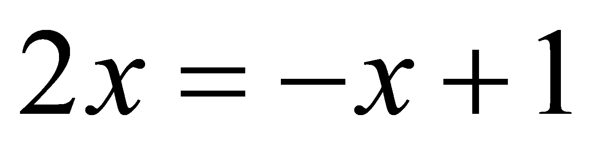
，故答案为：．
【变式2】一个长方形场地的周长为
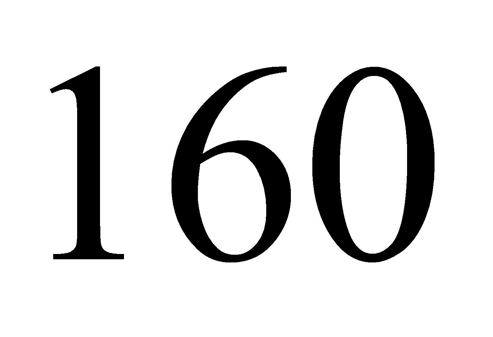
米，长比宽的 倍少
倍少 米．如果设这个场地的宽为米，那么可以列出方程为 ．
米．如果设这个场地的宽为米，那么可以列出方程为 ．【答案】
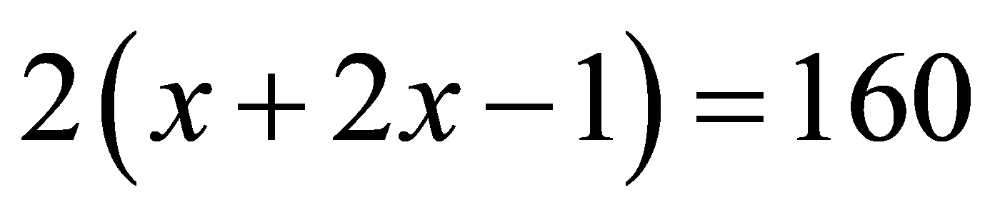
【知识点】列方程
【分析】设这个场地的宽为米，则长为 米，然后根据长方形的周长公式即可解答．
米，然后根据长方形的周长公式即可解答．
【详解】解：设这个场地的宽为米，则长为米，
由题意可得：．
故答案为．
【点睛】本题主要考查了列一元一次方程，审清题意、设出未知数、明确等量关系是解答本题的关键．
【变式3】蛋白质和碳水化合物是我们日常饮食中的两个重要组成部分，它们都是身体所需的营养素，能够为我们提供能量，一瓶牛奶的营养成分中，碳水化合物含量是蛋白质的 倍，碳水化合物，蛋白质与脂肪的含量共
倍，碳水化合物，蛋白质与脂肪的含量共 ．设蛋白质的含量为
．设蛋白质的含量为 ，脂肪的含量为
，脂肪的含量为 ，可列出方程为 ．
，可列出方程为 ．
【答案】
【知识点】列方程
【分析】本题考查了由实际问题抽象出二元一次方程，根据碳水化合物、蛋白质与脂肪的含量共列方程，解题的关键是读懂题意，找出合适的等量关系，列出方程．
【详解】解：设蛋白质的含量为，脂肪的含量为，则碳水化合物含量为
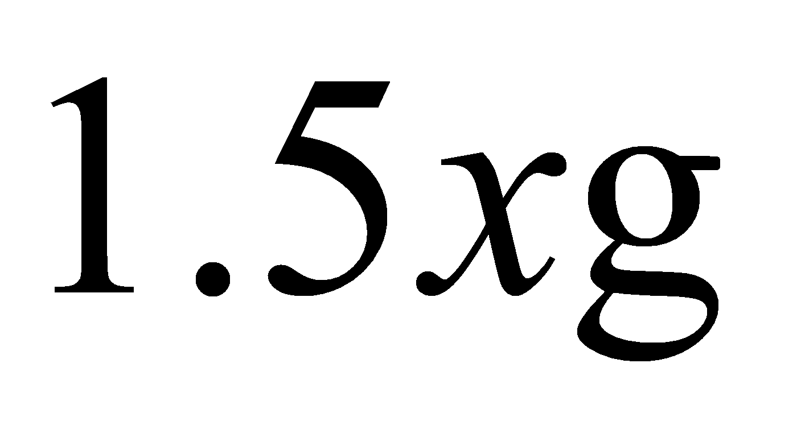
，依题意可列方程，，故答案为：．
题型03 判断是否是一元一次方程
【典例3】下列方程是一元一次方程的是（ ）
A． B．
B．
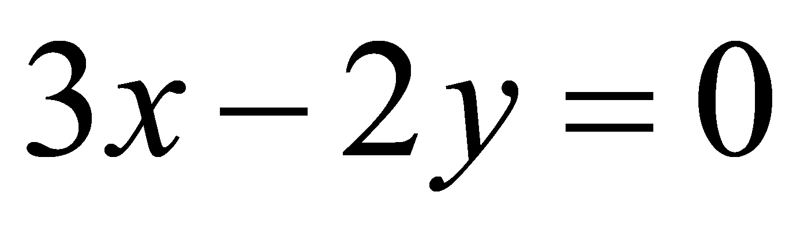
C． D．
D．
【答案】A
【知识点】一元一次方程的定义
【分析】本题考查了一元一次方程的定义，解题的关键是掌握判断一元一次方程要分为两步：（1）判断是否是整式方程；（2）对整式方程化简，化简后判断是否只含有一个未知数，并且未知数的指数是1只含有一个未知数．
【详解】解：A．符合一元一次方程的定义，是一元一次方程，故正确，符合题意；
B．含有两个未知数，是二元一次方程，故错误，不符合题意；
C．未知数的最高次数是2，是一元二次方程，故错误，不符合题意；
D．分母含有未知数，是分式方程，故错误，不符合题意．
故选：A．
【变式1】下列方程中，是一元一次方程的是（ ）
A． B．
B． C．
C．
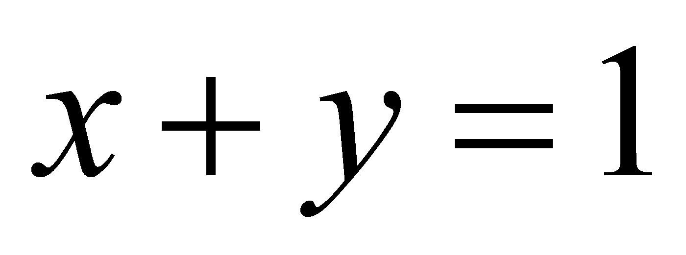
D．
【答案】A
【知识点】一元一次方程的定义
【分析】本题考查了一元一次方程的定义．一元一次方程中只含有一个未知数，未知数的最高次数为1且两边都是整式．根据一元一次方程的定义判断各选项即可．
【详解】解：A、是一元一次方程，符合题意；
B、未知数的次数是2，不是一元一次方程，不符合题意；
C、含有两个未知数，不是一元一次方程，不符合题意；
D、不是整式方程，不是一元一次方程，不符合题意；
故选：A
【变式2】已知下列方程：（1）
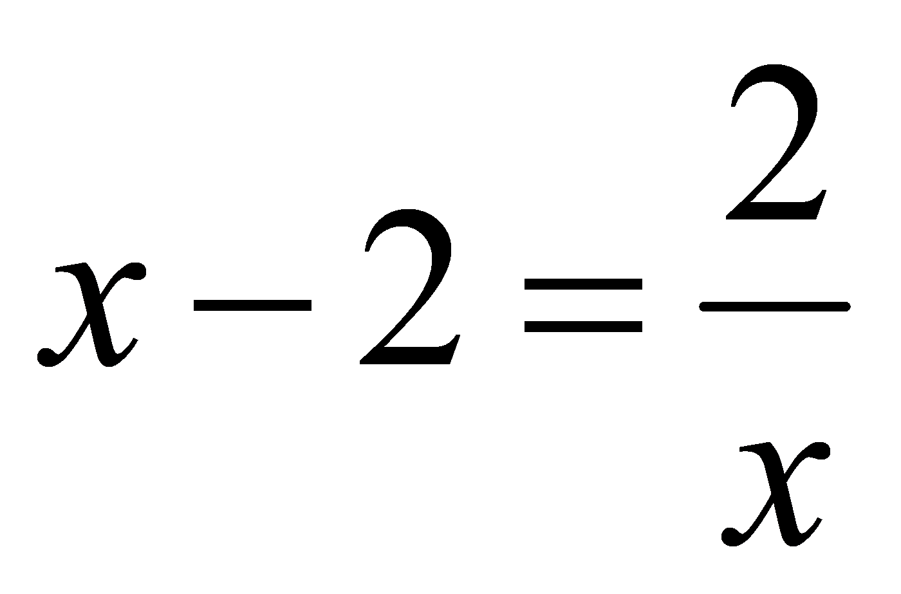
；（2） ；（3）
；（3） 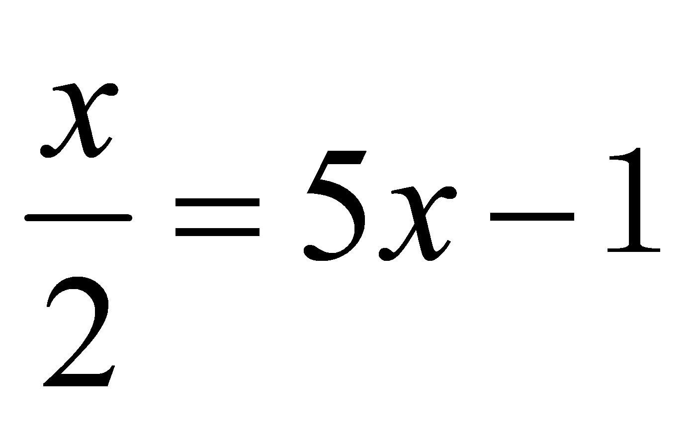
；（4） ； （5）
； （5） ；（6）
；（6） ．其中一元一次方程的个数有（ ）
．其中一元一次方程的个数有（ ）A．2 B．5 C．4 D．3
【答案】D
【知识点】一元一次方程的定义
【分析】本题主要考查了一元一次方程的定义，解题的关键是熟练掌握一元一次方程的定义，“只含有一个未知数，且未知数的指数是1，一次项系数不是0”．根据一元一次方程的定义进行判断即可．
【详解】解：（1）是分式方程，故（1）不符合题意；
（2），即 ，符合一元一次方程的定义，故（2）符合题意；
，符合一元一次方程的定义，故（2）符合题意；
（3）
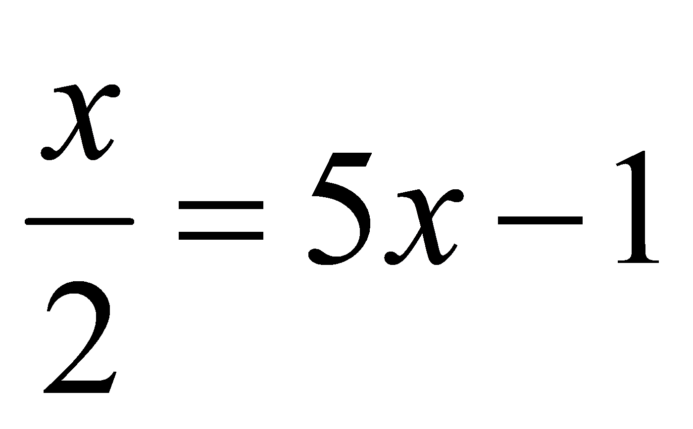
，即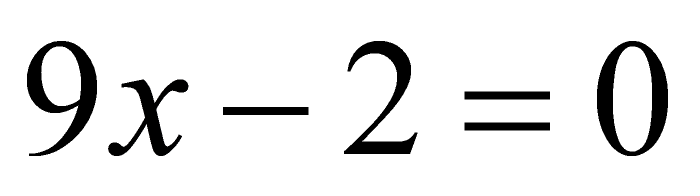
，符合一元一次方程的定义，故（3）符合题意；（4）的未知数的最高次数是2，它属于一元二次方程，故（4）不符合题意；
（5），即 ，符合一元一次方程的定义，故（5）符合题意；
，符合一元一次方程的定义，故（5）符合题意；
（6）
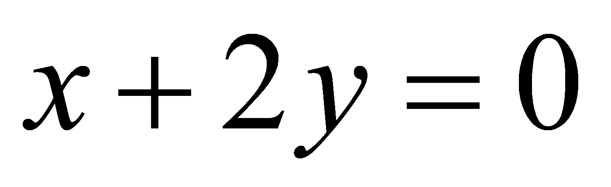
中含有2个未知数，属于二元一次方程．故（6）不符合题意．综上所述，一元一次方程的个数是3个．
故选：D．
【变式3】已知下列方程：① ；②
；② ；③
；③
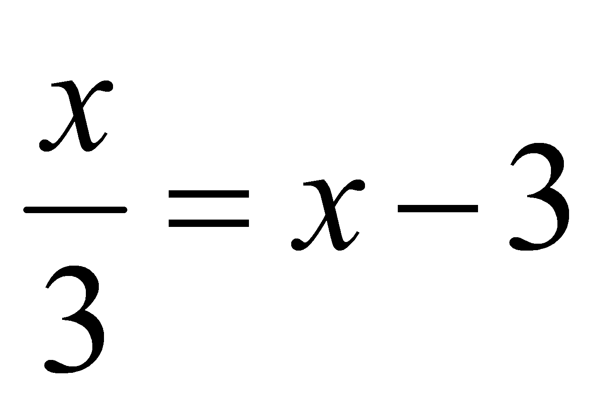
；④ ；⑤
；⑤ ，其中一元一次方程有（ ）
，其中一元一次方程有（ ）A．2个 B．3个 C．4个 D．5个
【答案】B
【知识点】一元一次方程的定义
【分析】本题主要考查了一元一次方程的一般形式，只含有一个未知数，且未知数的指数是1，一次项系数不是0，这是这类题目考查的重点．只含有一个未知数（元 ，并且未知数的指数是1（次的方程叫做一元一次方程．它的一般形式是
，并且未知数的指数是1（次的方程叫做一元一次方程．它的一般形式是
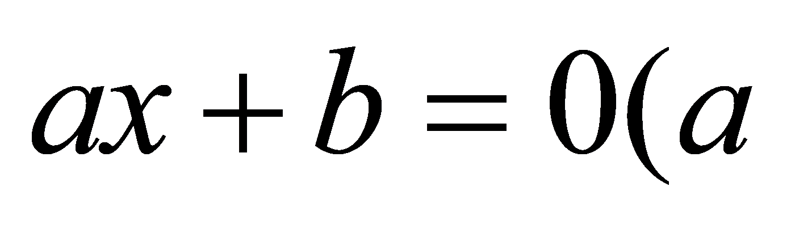
， 是常数且
是常数且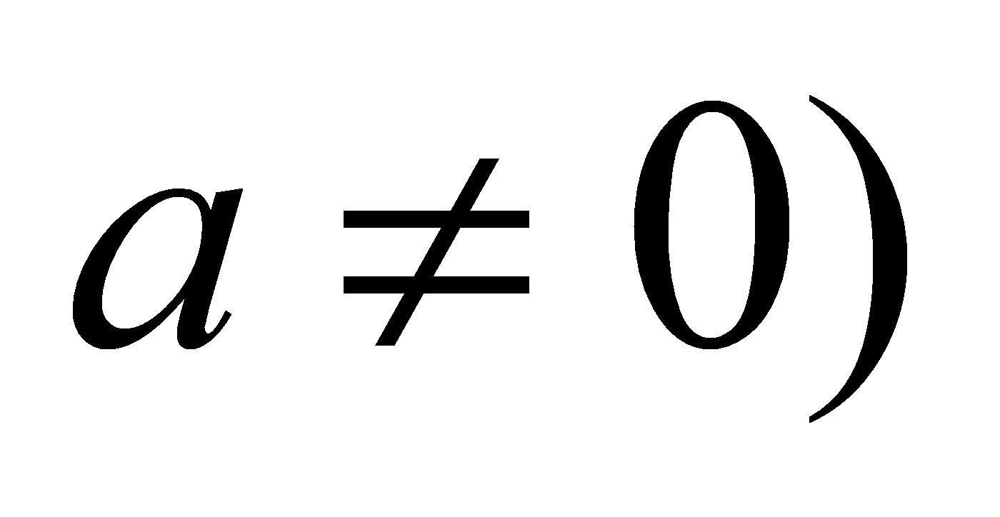
．【详解】解：①不是整式方程，不是一元一次方程；
②是一元一次方程；
③是一元一次方程；
④，函数2个未知数，不是一元一次方程；
⑤是一元一次方程．
一元一次方程有：②③⑤共3个．
故选：B
题型04 根据一元一次方程求参数的值
【典例4】已知 是关于的一元一次方程，那么
是关于的一元一次方程，那么 ．
．
【答案】1
【知识点】一元一次方程的定义
【分析】本题考查一元一次方程的定义：等号两边是整式，只有一个未知数且未知数的次数是1的方程叫一元一次方程，根据定义列式求解即可得到答案
【详解】解：∵是关于的一元一次方程，
∴ ，
，
∴ ，
，
故答案为：1．
【变式1】已知
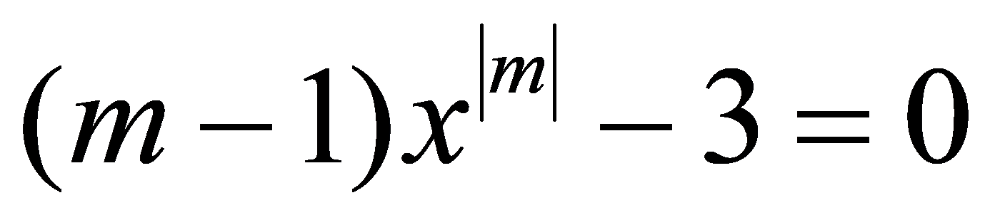
是关于的一元一次方程，则 的值为 ．
的值为 ．【答案】
【知识点】一元一次方程的定义
【分析】本题主要考查了一元一次方程的定义，根据一元一次方程的定义列出关于m的方程求解即可得出答案．
【详解】解：∵是关于的一元一次方程，
∴ 且
且
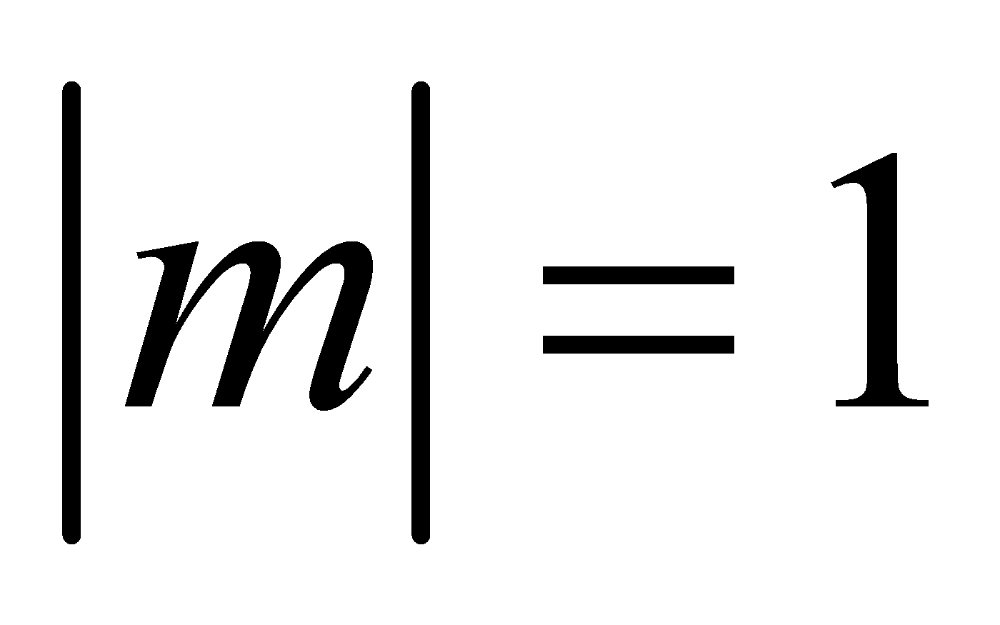
，解得：，
故答案为：．
【变式2】已知关于的方程
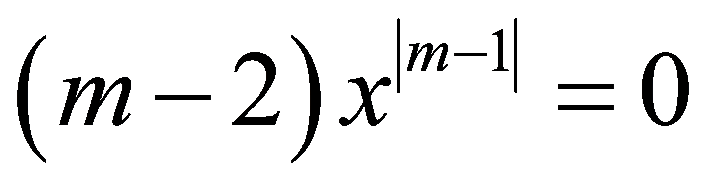
是一元一次方程，则 ．【答案】
【知识点】一元一次方程的定义
【分析】本题考查了一元一次方程，根据一元一次方程的定义可得 且
且
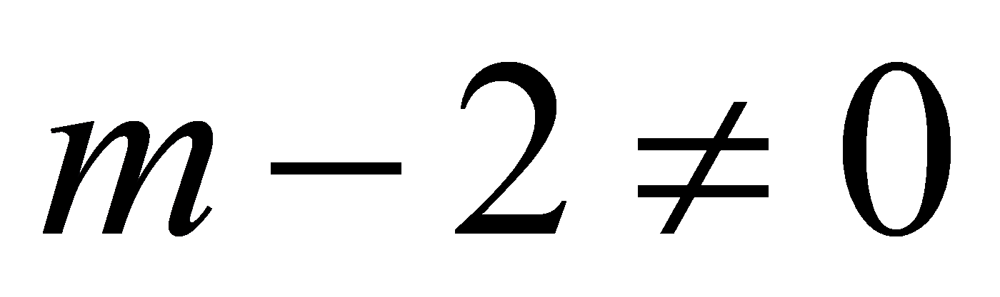
，据此即可求解，掌握一元一次方程的定义是解题的关键．【详解】解：∵关于的方程是一元一次方程，
∴且，
解得 ，
，
故答案为：．
【变式3】若关于的方程 是一元一次方程，则的值为 ．
是一元一次方程，则的值为 ．
【答案】或
【知识点】一元一次方程的定义
【分析】本题主要考查了一元一次方程的一般形式，只含有一个未知数，且未知数的指数是1，一次项系数不是0，这是这类题目考查的重点．根据一元一次方程的一般形式即可判定有 种情况，分别讨论①当
种情况，分别讨论①当 且时，②当且时，③当
且时，②当且时，③当
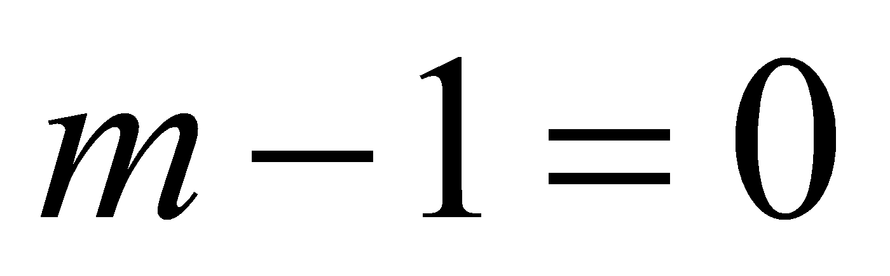
时是否满足该方程为一元一次方程即可．【详解】解： 关于的方程是一元一次方程，
关于的方程是一元一次方程，
可考虑三种情况，
①当且时，
即且 ，
，
则
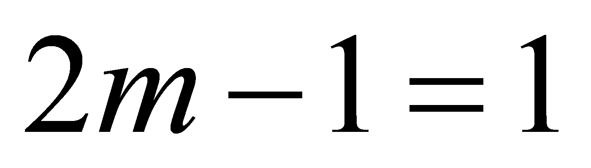
，解得：，此时，故排除；
②当且时，
即且，
 ，符合条件；
，符合条件；
③当即时，
，符合条件；
综上：的值为或，
故答案为：或．
题型05 判断是否是一元一次方程的解
【典例5】下列方程中，解为的是（ ）
A． B．
B．
C．
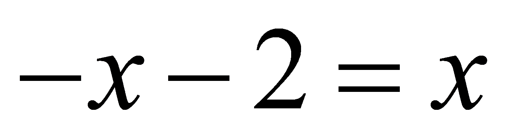
D．
【答案】B
【知识点】方程的解
【分析】此题主要考查了一元一次方程的解．直接利用一元一次方程的解的意义分别判断得出答案．
【详解】解：A、当时，
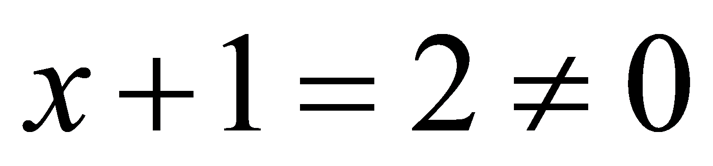
，故此选项不符合题意；B、当时， ，故此选项符合题意；
，故此选项符合题意；
C、当时， ，故此选项不符合题意；
，故此选项不符合题意；
D、当时， ，故此选项不符合题意．
，故此选项不符合题意．
故选：B．
【变式1】下列方程中，解为 的是（ ）
的是（ ）
A． B．
B．
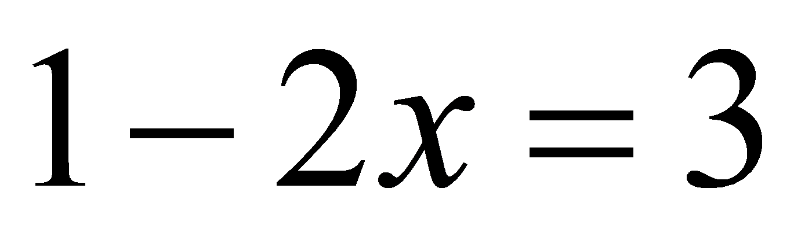
C．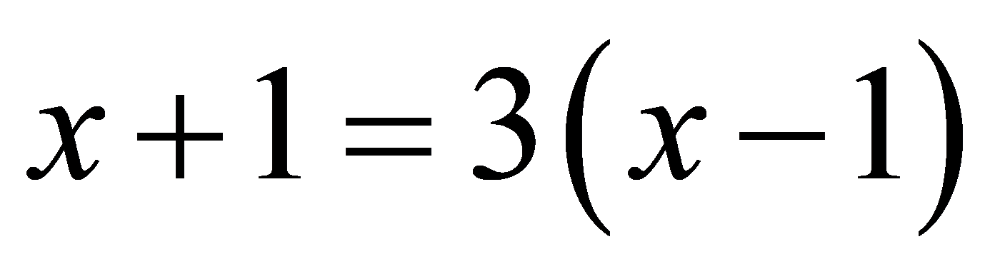
D．【答案】C
【知识点】方程的解
【分析】本题考查了一元一次方程的解，把代入每个方程，看看方程左右两边是否相等即可，能熟记方程的解的定义（使方程左右两边相等的未知数的值叫方程的解）是解此题的关键．
【详解】解：A．把代入方程，得左边
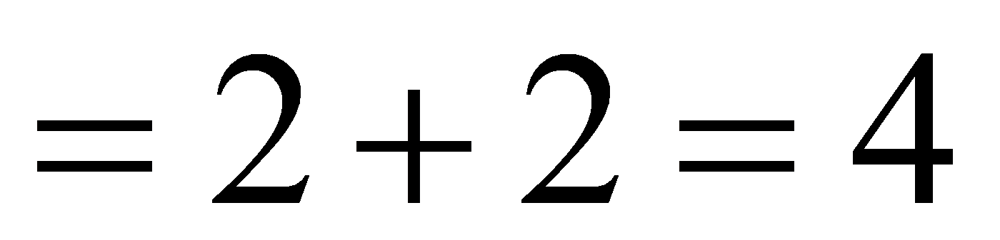
，右边 ，左边
，左边 右边，
右边，所以不是方程的解，故本选项不符合题意；
B．把代入方程，得左边
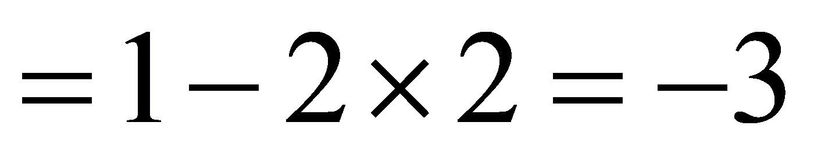
，右边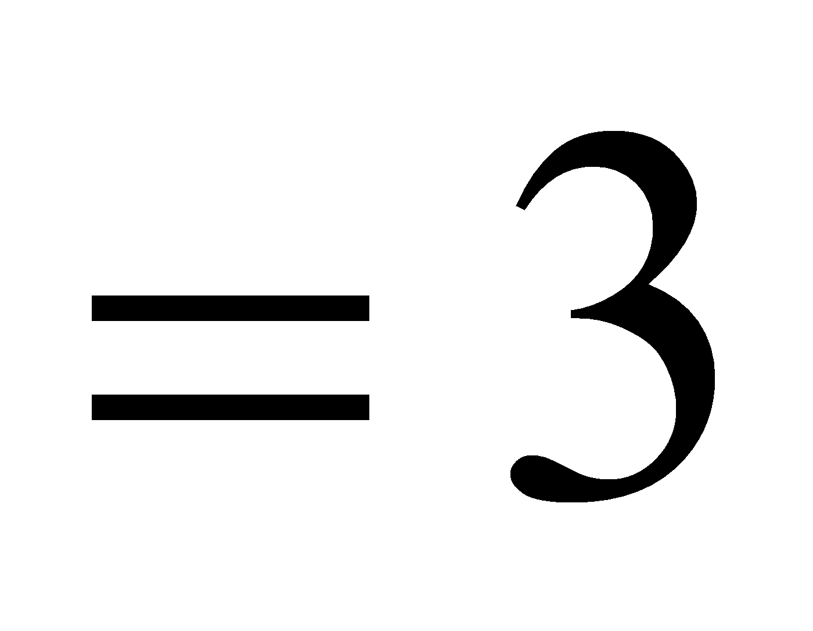
，左边右边，所以不是方程的解，故本选项不符合题意；
C．把代入方程
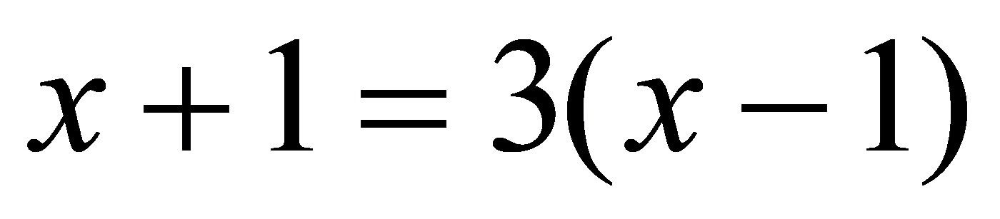
，得左边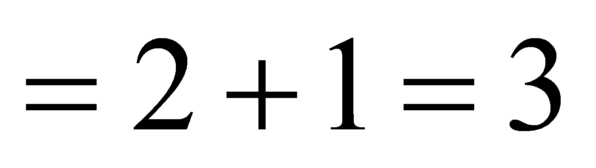
，右边 ，左边
，左边 右边，
右边，所以是方程的解，故本选项符合题意；
D．把代入方程，得左边
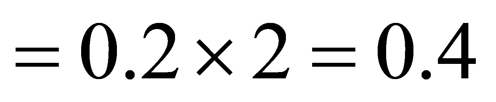
，右边 ，左边右边，
，左边右边，所以不是方程的解，故本选项不符合题意．
故选：C．
【变式2】下列方程中，解是 的方程是（ ）
的方程是（ ）
A． B．
B．
C． D．
D．
【答案】B
【知识点】方程的解
【分析】本题考查了一元一次方程的解，掌握方程的解能够使方程两边左右相等是解题关键．将分别代入方程计算即可．
【详解】解：A、 ，不符合题意；
，不符合题意；
B、 ，符合题意；
，符合题意；
C、 ，不符合题意；
，不符合题意；
D、
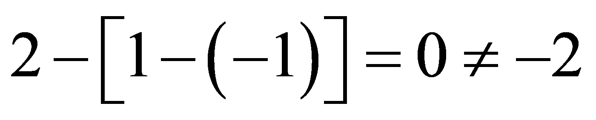
，不符合题意；故选：B．
【变式3】下列方程中，解是 的是（ ）
的是（ ）
A． B．
B． C．
C． D．
D．
【答案】D
【知识点】方程的解
【分析】本题主要考查了一元一次方程的解，牢记方程的解的定义“使方程中等号左右两边相等的未知数的值，就是方程的解”是解题的关键．
分别将依次代入每个方程，若等式左右两边相等，则为方程的解．
【详解】解：分别将依次代入每个方程，
A. 左边 ，右边
，右边 ，
，
左边右边，
 不是方程的解；
不是方程的解；
B. 左边 ，右边，
，右边，
左边右边，
不是方程的解；
C. 左边 ，右边
，右边
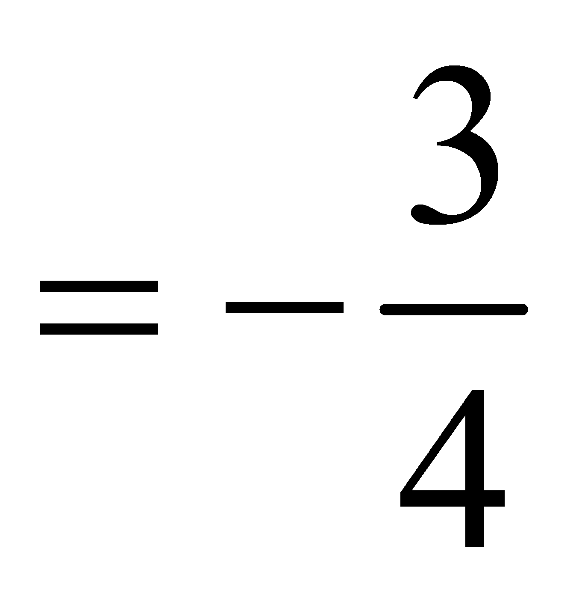
，左边右边，
不是方程的解；
D. 左边，右边，
左边右边，
是方程的解；
故选： ．
．
题型06 已知一元一次方程的解求参数的值
【典例6】若是方程的解，则 ．
．
【答案】1
【知识点】方程的解
【分析】本题考查了方程的解，解题的关键是掌握使方程两边相等的未知数的值是方程的解．将代入原方程进行解答即可．
【详解】解：把代入得： ，
，
解得： ，
，
故答案为：1．
【变式1】是方程的解，则的值是 ．
【答案】
【知识点】方程的解、解一元一次方程（一）——合并同类项与移项
【分析】此题考查了一元一次方程的解，将代入方程，再解方程即可，解题的关键是正确理解方程的解的概念及应用．
【详解】把代入方程得，，
解得：，
故答案为：．
【变式2】若关于x的方程 的解为， 则k的值为 ．
的解为， 则k的值为 ．
【答案】1
【知识点】方程的解
【分析】本题考查方程的解，将代入方程，进行求解即可．
【详解】解：把，代入，得：，
∴ ；
；
故答案为：1．
【变式3】是方程 的解，则 ．
的解，则 ．
【答案】
【知识点】方程的解
【分析】本题主要考查了一元一次方程的解，使一元一次方程左右两边相等的未知数的值叫做一元一次方程的解．根据一元一次方程的解的概念解答即可．
【详解】∵是方程的解，
∴ ，
，
解得 ，
，
故答案为：．
题型07 已知一元一次方程的解求代数式的值
【典例7】若是方程 的解，则的值为 ．
的解，则的值为 ．
【答案】2035
【知识点】已知式子的值，求代数式的值、方程的解
【分析】本题考查一元一次方程的解，解题的关键是把解代入方程中，得到代数式．把代入方程，得出，进而可得，然后整体代入计算即可．
【详解】解：∵是方程的解，
∴，
∴ ，即，
，即，
∴ ，
，
故答案为：2035．
【变式1】若关于x的方程 的解是
的解是 ，则
，则 的值为 ．
的值为 ．
【答案】
【知识点】方程的解
【分析】本题考查了方程解的概念，将代入方程，即可求解．
【详解】解：关于x的方程的解是，
将代入方程，有，
整理得，则，
故答案为：．
【变式2】已知关于x的一元一次方程的解是，则 的值为 ．
的值为 ．
【答案】0
【知识点】方程的解
【详解】把代入方程中得，，即，
∴ ．
．
【变式3】如果 是方程
是方程 的解，那么
的解，那么 ．
．
【答案】1
【知识点】方程的解
【分析】本题考查了一元一次方程的解，先把代入方程得到 ，再把
，再把 变形为
变形为 ，然后利用整体代入的方法计算．
，然后利用整体代入的方法计算．
【详解】解： 是方程的解，
是方程的解，
 ，
，
 ．
．
故答案为：1．
题型08 等式的基本性质
【典例8】运用等式性质进行的变形，正确的是（ ）
A．若 ，则 B．若，则
，则 B．若，则
C．若，则 D．若 ，则
，则
【答案】B
【知识点】等式的性质
【分析】本题考查了等式的性质，性质1：等式两边同时加（或减）同一个数（或式子），结果仍相等；性质2：等式两边同时乘同一个数，或除以同一个不为0的数，结果仍相等，根据对应性质逐一判断，即可得到答案．
【详解】解：A、若，当时， ，原变形错误，不符合题意；
，原变形错误，不符合题意；
B、若，则，原变形正确，符合题意；
C、若，则，原变形错误，不符合题意；
D、若，则，原变形错误，不符合题意；
故选：B．
【变式1】已知等式，下列变形不正确的是（ ）
A． B． C．
C． D．
D．
【答案】D
【知识点】等式的性质
【分析】本题考查了等式的性质．熟练掌握等式的性质是解题的关键．
根据等式的性质对各选项判断作答即可．
【详解】解：∵，
∴，，， ，
，
∴A、B、C正确，故不符合要求；D错误，故符合要求；
故选：D．
【变式2】下列等式变形正确的是（ ）
A．如果 ，那么
，那么 B．如果，那么
B．如果，那么
C．如果 ，那么 D．如果，那么
，那么 D．如果，那么
【答案】A
【知识点】等式的性质
【分析】本题主要考查了等式的基本性质，熟练掌握等式的基本性质是解题的关键．
根据等式的基本性质，逐项判断，即得．
【详解】解：A、，
等号两边都减y加3，
得，
故本选项正确，
符合题意；
B、，
当 时，，
时，，
故本选项错误，
不符合题意；
C、，
当 时，
时，
 ，
，
故本选项错误，
不符合题意；
D、，
两边都乘以2，
得 ，
，
故本选项错误，
不符合题意．
故选：A．
【变式3】下列说法错误的是（ ）
A．若 ，则 B．若
，则 B．若 ，则
，则
C．若，则 D．若 ，则
，则
【答案】B
【知识点】等式的性质
【分析】本题考查了等式的基本性质，根据等式的基本性质逐项判断即可求解，掌握等式的基本性质是解题的关键．
【详解】解： 、∵，根据等式的基本性质：“等式两边同时除以同一个不为
、∵，根据等式的基本性质：“等式两边同时除以同一个不为 的数，两边仍然相等”可得，
的数，两边仍然相等”可得，
∴正确，不符合题意；
 、∵，当
、∵，当 时，根据等式的基本性质：“等式两边同时除以同一个不为的数，两边仍然相等”，可得；当x=0时，
时，根据等式的基本性质：“等式两边同时除以同一个不为的数，两边仍然相等”，可得；当x=0时， ，可得x=0，
，可得x=0，
∴x=0或 ，
，
∴错误，符合题意；
 、∵，根据等式的基本性质：“等式两边减去同一个数，两边仍然相等”，可得，
、∵，根据等式的基本性质：“等式两边减去同一个数，两边仍然相等”，可得，
∴正确，不符合题意；
 、∵，根据等式的基本性质：“等式两边乘以同一个数，两边仍然相等”，可得，
、∵，根据等式的基本性质：“等式两边乘以同一个数，两边仍然相等”，可得，
∴正确，不符合题意；
故选：．

一、单选题
1．（25-26七年级上·湖北武汉·期中）下列方程是一元一次方程的是（ ）
A． B．
B． C． D．
C． D．
【答案】B
【分析】根据一元一次方程的定义，化简后只含一个未知数，且未知数的最高次数为1的整式方程是一元一次方程，逐一判断各选项即可；
本题主要考查了 一元一次方程的定义，熟练掌握其定义是解题的关键．
【详解】解：选项A：含有两个未知数，不是一元一次方程，不符合题意；
选项B：方程可化简为，该方程只含一个未知数 ，且未知数的最高次数为1，是整式方程，符合一元一次方程的定义，符合题意；
，且未知数的最高次数为1，是整式方程，符合一元一次方程的定义，符合题意；
选项C：未知数的最高次数为2，不是一元一次方程，不符合题意；
选项D：分母含有未知数，不是一元一次方程，不符合题意；
故选：B．
2．（25-26七年级上·重庆·期中）下列变形中，错误的是（ ）
A．若 ，则 B．若
，则 B．若 ，则
，则
C．若 ，则 D．若，则
，则 D．若，则
【答案】D
【分析】本题考查了等式的性质，性质1：等式两边同时加（或减）同一个数（或式子），结果仍相等；性质2：等式两边同时乘同一个数，或除以同一个不为0的数，结果仍相等．根据对应性质逐一判断，即可得到答案．
【详解】解：A、若，则，原说法正确，该选项不符合题意；
B、若，则，原说法正确，该选项不符合题意；
C、若，则，原说法正确，该选项不符合题意；
D、若，当 时，则，原说法错误，该选项符合题意；
时，则，原说法错误，该选项符合题意；
故选：D．
3．（25-26七年级上·湖南长沙·期中）笑笑在做作业时，不小心将方程中的一个常数污染了．老师告诉她方程的解是 ，则被污染的常数
，则被污染的常数 是（ ）
是（ ）
A．1 B．2 C．3 D．4
【答案】C
【分析】此题考查了一元一次方程的解，方程的解即为能使方程左右两边相等的未知数的值．将方程的解代入原方程，通过计算即可求出被污染的常数．
【详解】解：∵ 方程的解为，
∴ 代入方程得：，
∴，
∴，
∴，
故被污染的常数是3．
故选：C．
4．（25-26七年级上·黑龙江佳木斯·期中）一件商品按成本价提高后标价，再打8折（标价的 ）销售，售价为224元，设这件商品的成本价x元，下列方程正确的是（ ）
）销售，售价为224元，设这件商品的成本价x元，下列方程正确的是（ ）
A． B．
B．
C． D．
D．
【答案】B
【分析】本题考查了一元一次方程的应用，根据题意，成本价x元，提高后标价为，再打8折即乘以，售价为224元，因此方程为，即可求解．
【详解】解：设成本价为x元，
∵ 标价，
∴ 售价，
又∵ 售价，
∴，即选项B正确．
故选：B．
5．（25-26七年级上·湖南长沙·期中）若是关于x的一元一次方程，则m等于（ ）
A．1 B． C．1或0 D．0
C．1或0 D．0
【答案】D
【分析】本题考查根据一元一次方程的定义求参数，根据一元一次方程的定义，得到且 ，进行求解即可．
，进行求解即可．
【详解】解：由题意，且，
解得 ，
，
故选：D．
6．（25-26七年级上·四川自贡·期中）如果 是关于的方程
是关于的方程 的解，求的值为（ ）
的解，求的值为（ ）
A．1 B． C．21 D．5
C．21 D．5
【答案】C
【分析】本题主要考查一元一次方程的解及代数式的值，熟练掌握一元一次方程的解及代数式的值是解题的关键；将代入方程得到关于a和b的关系式，然后整体代入求值即可．
【详解】解：∵是方程的解，
∴，即，
∴；
故选：C．
7．（24-25七年级上·河南郑州·期末）代数式的值随取值的变化而变化，下表是当取不同值时对应的代数式的值，则关于的方程 的解是（ ）
的解是（ ）
|
|
| 0 | 1 | 2 | 3 | |
8 | 6 | 4 | 2 | 0 |
|


A． B．
B． C．
C． D．
D．
【答案】D
【分析】本题考查了已知式子的值求代数式的值及方程的解，先整理得，根据表格数据，得出当时，则，即可作答．
【详解】解：∵，
∴，
观察表格数据，得出当时，则；
即关于的方程的解是
故选：D．
二、填空题
8．（24-25七年级下·四川内江·期中）在方程中，用含 的代数式表示，可得 ．
的代数式表示，可得 ．
【答案】或
【分析】根据等式的性质计算判断即可．
本题考查了等式的性质，熟练掌握性质，正确变形是解题的关键．
【详解】解：由方程可得到
或．
故答案为：或．
9．（2025七年级上·北京·专题练习）下列各式中，是等式的有 ，是方程的有 ．（填序号）
① ；②
；② ；③；④；⑤
；③；④；⑤ ．
．
【答案】 ①③④⑤ ④⑤/⑤④
【分析】本题考查等式和方程定义，熟记等式与方程定义是解决问题的关键．
根据等式：必须含有“ ”， 方程：既是等式，又含未知数逐项验证即可得到答案．
”， 方程：既是等式，又含未知数逐项验证即可得到答案．
【详解】解：等式有①、③、④、⑤；
其中③不含未知数，是恒等式；在初中阶段，通常将⑤视为方程；
故答案为：①③④⑤；④⑤．
10．（2025七年级上·全国·专题练习）有下列方程：① ；②
；② ；③
；③ ；④；⑤；⑥．其中，x＝2是其解的方程有 ．（填序号）
；④；⑤；⑥．其中，x＝2是其解的方程有 ．（填序号）
【答案】②④⑤⑥
【分析】本题考查了方程的解，掌握方程的解的定义是解题的关键．
根据方程的解是使方程成立的未知数的值，可得答案．
【详解】解：当时，①的左边，右边 ，左边右边，所以不是①的解；
，左边右边，所以不是①的解；
当时，②的左边，右边，左边右边，所以是②的解；
当时，③的左边，右边 ，左边右边，所以不是③的解；
，左边右边，所以不是③的解；
当时，④的左边，右边 ，左边右边，所以是④的解；
，左边右边，所以是④的解；
当时，⑤的左边，右边 ，左边右边，所以是⑤的解；
，左边右边，所以是⑤的解；
当时，⑥的左边，左边右边，所以是⑥的解；
故答案为：②④⑤⑥．
11．（25-26七年级上·黑龙江哈尔滨·期中）若是关于的一元一次方程，则 的值是 ．
的值是 ．
【答案】
【分析】本题主要考查了通过一元一次方程求参数，解题的关键是掌握一元一次方程的定义．
根据一元一次方程的定义，未知数的指数必须是1且系数不为零，得到 且
且 ，求解即可．
，求解即可．
【详解】解：∵方程是关于的一元一次方程，
∴ 且，
由，得，所以 或
或  ，
，
当时， ，不符合条件；
，不符合条件；
当时，，符合条件，
故答案为： ．
．
12．（25-26七年级上·全国·课后作业）用一根绳子去量一根木头，绳子还剩余45cm；将绳子对折再量木头，木头还剩余10cm．木头长多少厘米？设木头长xcm，则可列方程为 ．
【答案】
【分析】本题考查一元一次方程的应用，关键是根据绳子长度不变这一等量关系，用含木头长度的式子表示出绳子的长度，进而列出方程．
【详解】解：设木头长厘米
用一根绳子去量一根木头，绳子还剩余，绳子长度为：厘米；
第二次将绳子对折再量木头时，根据将绳子对折再量木头，木头还剩余10cm可得对折后的绳长为cm，因此绳子总长为cm；
由于绳子的长度始终不变，则：
整理得：
故答案为：．
【点睛】本题考查了一元一次方程的应用，解题关键是抓住绳子长度不变这一等量关系，分别用含的式子表示出绳子的长度，进而建立方程．
13．（24-25七年级上·河南周口·阶段练习）若关于的方程的解是，则代数式的值为 ．
【答案】2026
【分析】本题考查了一元一次方程的解，求代数式的值，由题意可得，整体代入所求式子计算即可得解，熟练掌握以上知识点并灵活运用是解此题的关键．
【详解】解：是方程的解，
，即，
．
故答案为：2026．
14．（24-25九年级上·江苏无锡·阶段练习）如果 、
、 是定值，且关于的方程，无论
是定值，且关于的方程，无论 为何值时，它的解总是，那么
为何值时，它的解总是，那么 的值是 ．
的值是 ．
【答案】
【分析】本题考查了方程解的定义，一元一次方程有无数个解的条件，代数式的值，根据解的定义，灵活运用转化的思想，把问题转化为一元一次方程有无数个解的问题是解题的关键，根据方程解的定义，把方程转化为关于k的一元一次方程，根据方程有无数解的条件求解即可．
【详解】解：把代入方程，
，
，
，
，
由题意得：，
解得：，
，
故答案为：．
三、解答题
15．（25-26七年级上·全国·课后作业）（1）若 ，则
，则 _________．
_________．
这是根据等式基本性质_________，等式的两边________．
（2）若，则 ________
________ ．
．
这是根据等式基本性质__________，等式的两边_________．
（3）若，则_______．
这是根据等式基本性质________，等式的两边_________．
【答案】（1）5，1，同时加上5（2） ，1，同时加上
，1，同时加上 （3）3，2，同时乘以3
（3）3，2，同时乘以3
【分析】本题主要考查等式的性质，熟练掌握等式的性质是解题的关键；根据等式的性质进行求解即可．
【详解】解：（1）若，则，
这是根据等式基本性质1，等式的两边同时加上5，
故答案为：5，1，同时加上5；
（2）若，则．
这是根据等式基本性质1，等式的两边同时加上，
故答案为：，1，同时加上．
（3）若，则．
这是根据等式基本性质2，等式的两边同时乘以3；
故答案为：3，2，同时乘以3．
16．（25-26七年级上·全国·课后作业）利用等式的基本性质，将下面的等式变形为（c是常数）的形式．
(1) ；
；
(2) ；
；
(3)；
(4) ．
．
【答案】(1)
(2)
(3)
(4)
【分析】本题考查等式的基本性质，掌握相关知识是解决问题的关键．
（1）等式两边同减去5即可；
（2）等式两边同除以3即可；
（3）等式两边同乘以 即可；
即可；
（4）等式两边同加上即可．
【详解】（1）解：，
，
；
（2）解：，
，
；
（3）解：，
，
；
（4）解：，
，
．
17．（2024七年级上·全国·专题练习）若方程是关于x的一元一次方程．
(1)求k的值；
(2)判断 ，
， ，是否是方程的解．
，是否是方程的解．
【答案】(1)
(2)见解析
【分析】本题主要考查了一元一次方程的定义以及方程的解，解题的关键是掌握一元一次方程的定义：只含有一个未知数（元），并且未知数的指数是1（次）的方程叫做一元一次方程．它的一般形式是 （a，b是常数且
（a，b是常数且 ）．
）．
（1）根据一元一次方程的定义解答即可．
（2）将，，分别代入即可判断．
【详解】（1）解：由题意可知且，
∴且，
∴；
（2）解：由（1）可知方程为．
把代入方程，得左边右边，∴不是方程的解；
把代入方程，得左边右边，∴不是方程的解；
把代入方程，得左边右边，∴是方程的解．
18．（25-26七年级上·全国·课后作业）根据下列情境中的等量关系列出一个等式：
(1)一个正方形花圃的边长为 ，若边长增加，则所得新正方形花圃的周长是
，若边长增加，则所得新正方形花圃的周长是 ．
．
(2)长方形的长为 ，宽为
，宽为 ，面积为
，面积为 ；
；
(3)某商品标价为x元，打八折后再降价12元，售价为108元；
(4)小华去文具店，买x支铅笔和y本笔记本共花12元，已知一支铅笔2元，一本笔记本3元．
【答案】(1)
(2)
(3)
(4)
【分析】本题主要考查列方程，解题的关键是理解题意；
（1）根据正方形的周长公式可进行求解；
（2）根据长方形的面积公式可进行求解；
（3）根据打折问题可求解；
（4）根据题意可直接列方程即可．
【详解】（1）解：由题意得：；
（2）解：由题意得：；
（3）解：由题意得：；
（4）解：由题意得：．
19．（25-26七年级上·全国·课后作业）已知关于的方程是一元一次方程．
(1)求的值．
(2)请判断和是否为方程的解．
(3)求的值．
【答案】(1)
(2)不是方程的解；是方程的解
(3)
【分析】（1）根据一元一次方程的定义，可知， ，解之即可得到答案；
，解之即可得到答案；
（2）将（1）中得到的的值代入原方程，分别将 ，
， ，代入方程中，若能使等式成立，即为方程的解，否则就不是；
，代入方程中，若能使等式成立，即为方程的解，否则就不是；
（3）化简求值后，将（1）中得到的的值代入即可得到答案．
【详解】（1）解：由题意，得 ，解得．
，解得．
（2）解：由（1）可知，，则方程为．
把代入，左边右边，故不是方程的解；
把代入，左边右边，故是方程的解．
（3）解：原式．
当时，原式 ．
．
【点睛】本题考查了一元一次方程的解及其定义，熟练掌握一元一次方程的概念及解法是解题的关键．
20．（23-24七年级上·江苏盐城·期中）数学课本上有这样一道题“如果代数式的值为 ，那么代数式的值是多少？”小明同学解题过程如下：
，那么代数式的值是多少？”小明同学解题过程如下：
解：原式
因为，所以原式 ．
．
小明同学把 作为一个整体进行代入求值，像这样的求解方法称为“整体思想”，这是数学解题中的一种重要思想方法，它在多项式的化简求值与解方程中应用极为广泛．请仿照上面的解题方法，完成下面问题：
作为一个整体进行代入求值，像这样的求解方法称为“整体思想”，这是数学解题中的一种重要思想方法，它在多项式的化简求值与解方程中应用极为广泛．请仿照上面的解题方法，完成下面问题：
【尝试应用】
（1）已知a、b互为相反数，m、n互为倒数，则 ______．
______．
（2）已知，当， 的值是2023；当
的值是2023；当 时，
时， 的值是____．
的值是____．
【拓展提高】
（3）已知 ，，，求的值．
，，，求的值．
（4）关于x的一元一次方程的解 ，解关于y的一元一次方程．
，解关于y的一元一次方程．
【答案】（1）；（2）；（3） ；（4）．
；（4）．
【分析】本题主要考查了相反数，倒数，求代数式的值，一元一次方程的解，本题是阅读型题目，正确掌握题干中的方法并熟练运用是解题的关键．
（1）利用相反数和倒数的意义求得的值，代入运算即可；
（2）利用已知条件求得关于a，b，c的值，再利用整体代入的方法解答即可；
（3）去墇括号后，重新结组，再利用整体代入的方法解答即可；
（4）利用换元的思想方法将看成即可得出结论．
【详解】（1）∵a，b互为相反数，
互为倒数，，
故答案为：；
已知，当，的值是2023，
 当时，
当时，
故答案为：－2007；
 ；
；
 关于x的一元一次方程的解，
关于x的一元一次方程的解，
，
．